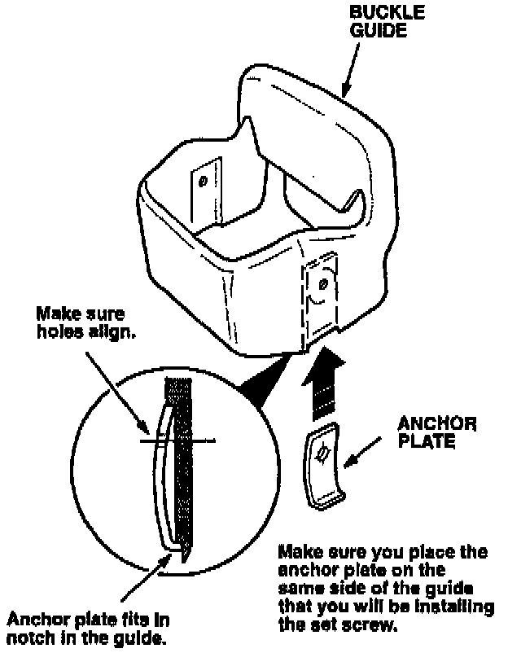
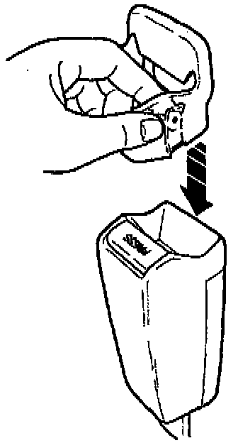
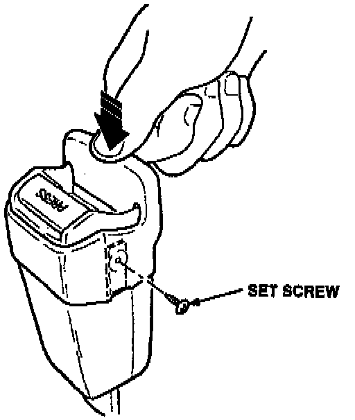

Seat Belt Buckle Guide Installation

1. Select the proper buckle guide kit. Place the anchor plate inside the buckle guide. Make sure the hooked end fits inside the buckle guide, and that the holes in the anchor plate and the guide line up.

2. While holding the anchor plate in position with your finger, slide the buckle guide onto the buckle.

3. Use a screwdriver with a magnetic tip to install a set screw in the buckle guide on the same side that you installed the anchor plate. As you tighten the set screw, push down on the buckle guide to make sure it is fully on the buckle.
NOTE:
Tighten the screw by hand or with a low-torque battery-operated screwdriver. A pneumatic or high-torque screwdriver will strip the guide and anchor plate.
4. Repeat steps 1 through 3 on the other front seat belt buckle.
5. Center-punch a completion mark below the first character of the engine compartment VIN.